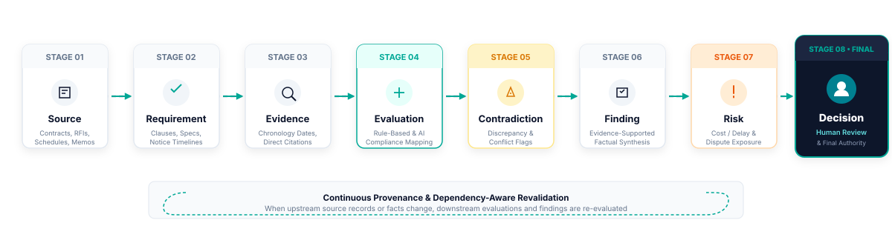
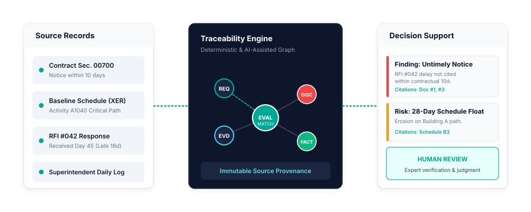

An Unbroken Chain from Raw Source to Governed Decision
PEIS processes complex project documentation through a structured, 8-stage evaluation pipeline. Every conclusion is cryptographically anchored to verbatim source evidence, ensuring total auditability and zero ungrounded speculation.

The 8 Stages of Project Intelligence
Explore the systematic transformation of records into decision-grade intelligence.
1. Source Ingestion & Content Normalization
PEIS ingests heterogeneous project artifacts—prime contracts, subcontracts, specifications, schedule files (XER/XML), RFIs, daily logs, submittals, meeting minutes, and change order packages. Documents are cataloged, cryptographic checksums (SHA-256) are generated to verify immutability, and textual/structural elements are normalized into structured tokens.
2. Requirement Identification
The system extracts and models explicit contractual covenants: notice timing requirements (e.g., "written notice within 10 calendar days"), submittal review turnaround windows, baseline schedule update intervals, differing site conditions procedures, and milestone liquidated damages clauses.
3. Evidence Extraction & Mapping
Factual occurrences are extracted with exact temporal stamps and author/recipient metadata. PEIS builds an integrated event graph connecting RFI submissions, architect responses, field directives, inspector logs, weather records, and progress photo timestamps.
4. Evaluation & Compliance Synthesis
PEIS evaluates factual evidence against established contractual requirements. The engine checks timeline adherence (was notice timely submitted?), deliverable completeness (were mandatory attachments included?), and schedule impact correlation (did the event fall on the contemporaneously established critical path?).
5. Contradiction & Variance Detection
Conflicting assertions across documents are surfaced immediately. For example, if a contractor's claim asserts site access was blocked on Day 45, but daily inspection reports indicate active structural steel erection on that exact date, PEIS flags the contradiction with dual-source citations.
6. Evidence-Supported Finding Generation
Discrete evaluations and verified facts are consolidated into coherent, factual findings. Every finding includes complete traceability breadcrumbs linking each assertion back to specific source page numbers and paragraph coordinates.
7. Risk & Exposure Analysis
Findings are correlated into programmatic and commercial risk matrices: critical path delay exposure (calendar days), cumulative cost claim liabilities, constructive change vulnerability, and potential liquidated damage assessments.
8. Human Professional Review & Decision
The analytical process terminates in human hands. Project managers, legal counsel, and executive decision-makers review the synthesized evidence dossier, adjust weightings if warranted, and exercise authoritative judgment. PEIS strictly serves as an analytical co-pilot—never an autonomous judge.
Dependency-Aware Revalidation: Integrity in Motion
Complex projects are dynamic. New documents arrive constantly: revised CPM schedules are submitted, dispute notices are issued, or historical records are clarified.
In traditional static analysis, adding new documents requires restarting the entire review from scratch. In PEIS, the evaluation graph is dependency-aware:
When an upstream evidence item is updated, added, or revised, PEIS flags all downstream evaluations, contradictions, findings, and risk scores as "Pending Revalidation" until the updated evidence is propagated through the rule chain.

Review Current Operational Capabilities
Explore our granular capability matrix detailing current operational features versus future roadmap items.